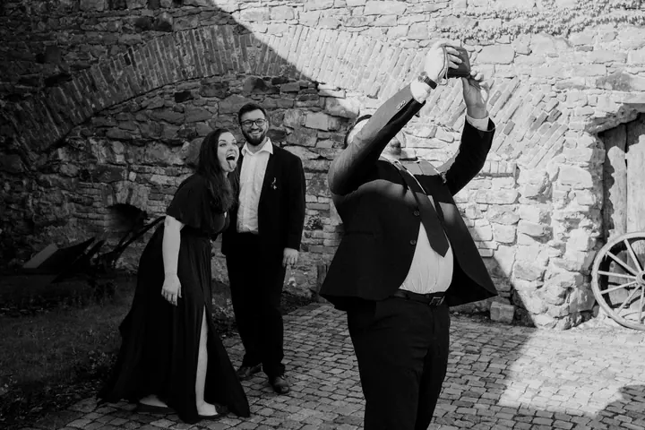

Svatby
Celý den od přípravy nevěsty přes obřad až po večerní tanec. Fotím nenápadně, abyste se mohli věnovat sobě a svým hostům.

Jmenuji se Alžběta Felix a ráda zachycuji skutečné okamžiky mezi lidmi, jejich lásku a to, jak spolu jsou. Fotím svatby, páry, rodiny i těhotenské focení. Můžeme fotit u…
Rezervovat termínBydlím na malé vesnici nedaleko Prahy, protože jsem potřebovala utéct ruchu velkoměsta. Díky tomu teď objevuji Prahu znovu, z jiného úhlu. Ráda cestuji, čtu a samozřejmě fotím.


Mám ráda zvířata, mých pět koček mluví samo za sebe. Jsem máma dvou malých dětí, holčičky a kluka, takže vím, jak rychle všechno utíká a jak cenné je mít to zachycené.
Nejsem úplně extrovert. Když vás fotím, jsem skoro neviditelná a nechávám vás být sami sebou. Když budete chtít, ráda vám s pózováním pomůžu. Opravdu se těším, až se potkáme.
Co fotím
Celý den od přípravy nevěsty přes obřad až po večerní tanec. Fotím nenápadně, abyste se mohli věnovat sobě a svým hostům.
Procházka lesem, po vašem oblíbeném městě nebo čas na zahradě. Zajímá mě, jak spolu opravdu jste, ne naučené pózy.
Fotíme u vás doma nebo venku, kde se budete cítit dobře. Zachytím, jak to u vás vypadá ve skutečnosti.
Klidné a nespěchané focení v době, kdy čekáte miminko. Místo vybereme spolu, ať je vám příjemně.
Fotografie jsou ilustrační
Postup
Pošlete mi pár řádků o tom, co plánujete a kdy. Ozvu se vám zpátky a domluvíme se na detailech.
Společně najdeme místo, kde vám bude dobře. Klidně u vás doma, v lese nebo ve vašem oblíbeném městě.
Jsem nenápadná a nechám vás být sami sebou. Když bude potřeba, s pózováním poradím.
Fotografie pečlivě vyberu a upravím do svého jemného stylu a pošlu vám je online.
Otázky
Kdekoli, kde se budete cítit dobře. U vás doma, na procházce lesem nebo ve městě, které máte rádi. Bydlím kousek od Prahy, takže Praha a okolí jsou mi nejblíž.
Vůbec ne. Fotím spíš nenápadně a nechávám vás být sami sebou. Když budete chtít, ráda vám s pózováním pomůžu.
Ano, ráda vás doprovodím od ranních příprav přes obřad až po večerní tanec. Rozsah si domluvíme podle vašeho dne.
Napište mi přes formulář na webu, e-mailem nebo zavolejte. Ozvu se vám co nejdřív.